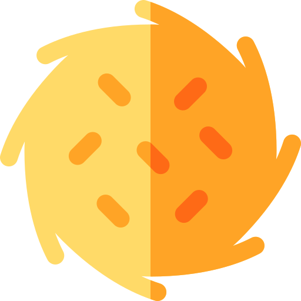

<div class="view" [style.overflow]="focusedRecipe ? 'hidden' : 'hidden'" style="position: relative;">
  <app-header title="Recettes" [searchBox]="true"></app-header>

  <app-recipe *ngFor="let recipe of client.recipes" [recipe]="recipe" [index]="client.recipes.indexOf(recipe)" [delayAnimation]="!initialized" (click)="focusedRecipe = recipe"></app-recipe>
  <div *ngIf="!client.recipes.length" class="nothing">
    
    <label class="calm">
      C'est trop calme...
    </label>
    <button class="discover" mat-stroked-button color="accent" [routerLink]="'/home'">Découvrir des recettes</button>
	</div>
	<app-recipe-view *ngIf="focusedRecipe" [recipe]="focusedRecipe" (close)="focusedRecipe = undefined"></app-recipe-view>
</div>
